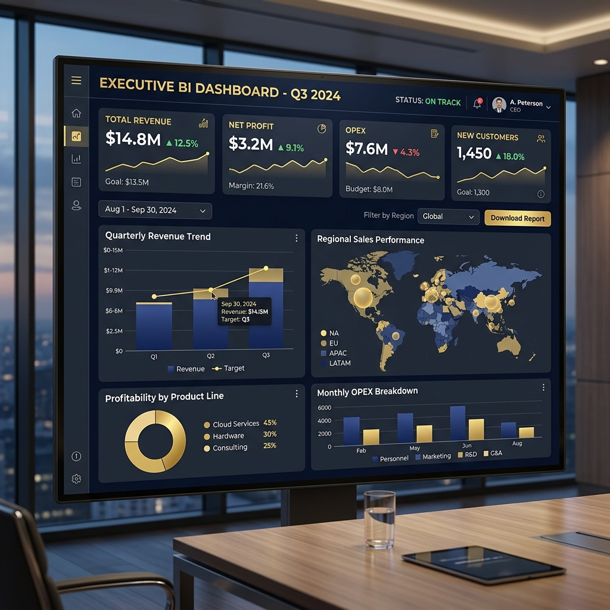
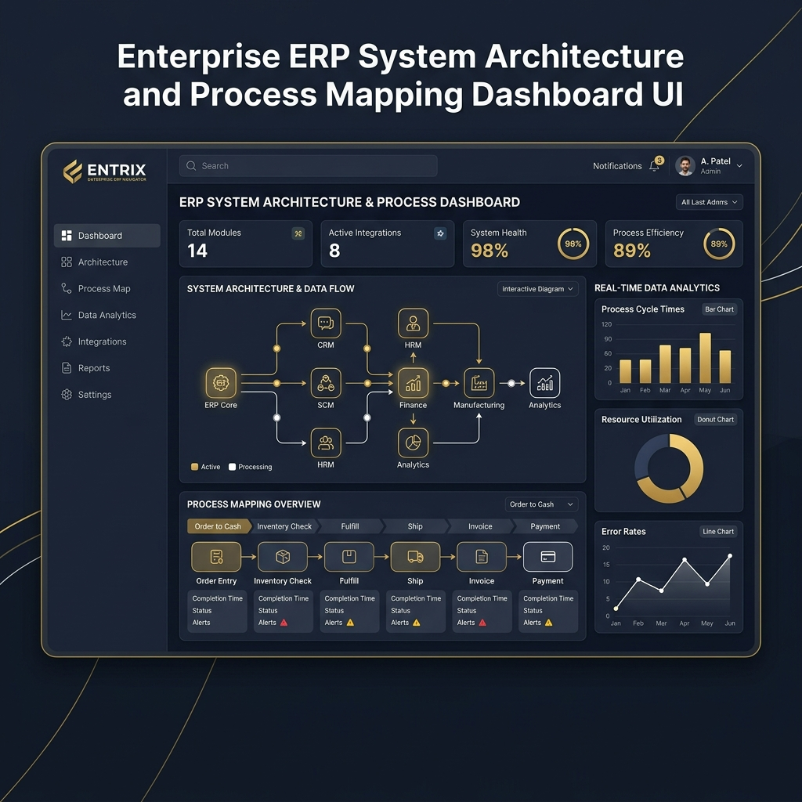
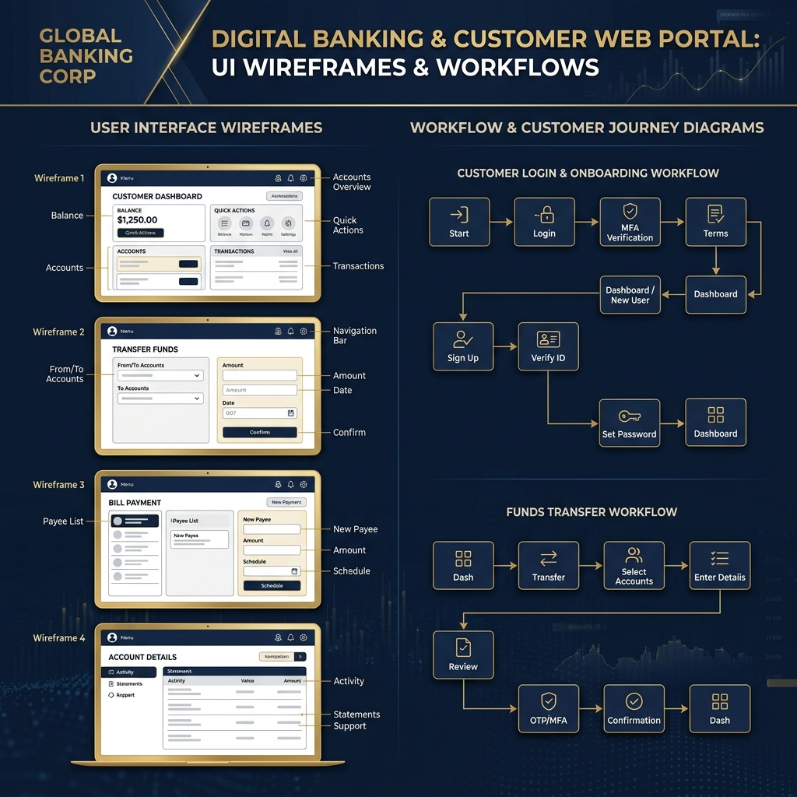

Master en Gestion de Projets SI (IPI 2026). Expérience confirmée chez ENGIE Home Services en cadrage des besoins métiers, animation d'ateliers, pilotage de recettes fonctionnelles et accompagnement au changement.
Chef de Projet MOA en alternance chez ENGIE Home Services et bientôt diplômée d'un Master en Gestion de Projets Informatiques à l'IPI, je bénéficie d'une expérience solide en cadrage fonctionnel, recueil et analyse des besoins métiers ainsi qu'en coordination entre les équipes métiers et la DSI sur des projets de transformation SI.
Je recherche un poste de **Chef de Projet MOA** me permettant de mettre au service d'un secteur exigeant mon sens de la coordination, ma rigueur et mon goût du terrain.
J'aime animer des ateliers de co-construction et les instances de pilotage (COPIL, réunions de suivi) pour favoriser la synergie Métier / DSI.
Création et exploitation de tableaux de bord Power BI dynamiques pour mesurer la performance, la satisfaction client et la conformité QHSE.
Pilotage de la recette fonctionnelle et conduite du changement sur le terrain jusqu'à l'adoption complète des nouveaux outils.

Power BI • FSMCréation complète sous Power BI et Power Query de tableaux de bord de suivi de la satisfaction client (mesures à chaud / à froid) pour Field Service Management.

Power BI • FleetExploitation et modélisation des données télématiques pour générer un reporting national clé en main destiné aux Directeurs Régionaux.

Power BI • QHSEConception d'un rapport Power BI en étroite collaboration avec les responsables métiers QHSE pour le suivi national, régional et individuel de la conformité des équipements.
À la recherche d'un poste de Chef de Projet MOA / Business Analyst en CDI à partir de Septembre 2026 à Paris ou en mobilité nationale. N'hésitez pas à me contacter !